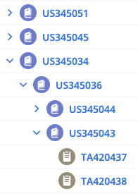

RallyTree introduction
Trees

Do you need to operate on a tree of Rally work items?
To do that manually, you must
- expand each work item in the Rally web interface, until the entire tree is expanded
- perform a bulk edit
That can take you several minutes. It is also vulnerable to error.
RallyTree automates that process. You specify the root user story of the tree and what you want done. Then RallyTree performs the operation on that user story and all of its descendant user stories and tasks.
Operations
Ownership change
One operation is to change the owner. If you request that, RallyTree examines all the user stories and tasks in the tree. Wherever the specified owner is not yet the owner, RallyTree makes the change.
Task creation
Another operation is to create tasks. If you request that, RallyTree examines each user story in the tree. If it has no child user stories, RallyTree creates tasks for it, named as you specify.
Test-case creation
Another operation is to create test cases. If you request that, RallyTree examines each user story in the tree. If it has no child user stories, RallyTree creates a test case for it.
Copy creation
Another operation is to copy the tree. If you request that, RallyTree creates a duplicate tree and gives it the parent user story that you specify. The copy includes only user stories.
Support
Problems? Please send questions or comments about RallyTree to Jonathan Pool.